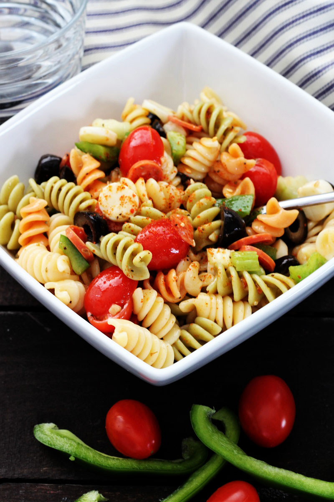

Pasta Salad

Ingredients
- 1 pound tri-colored pasta
- 1 bottle Italian-style salad dressing
- Seasoning Mix
- Vegetables
How to make
- Bring a large pot of lightly salted water to a boil. Cook pasta in the boiling water, stirring occasionally, until tender yet firm to the bite, about 10 to 12 minutes; rinse under cold water and drain.
- Whisk Italian dressing and salad spice mix together until smooth. Combine pasta, tomatoes, bell peppers, and olives in a salad bowl.
- Pour dressing over salad and toss to coat.
- Refrigerate salad, 8 hours to overnight.
- Enjoy!